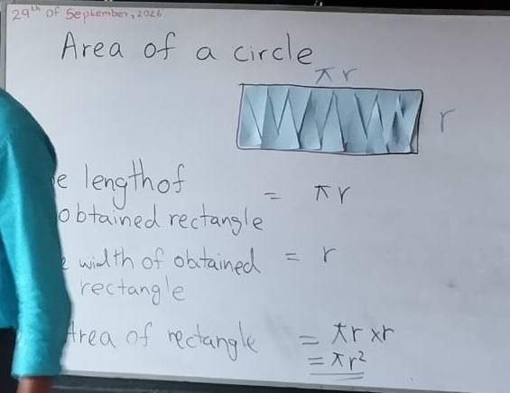
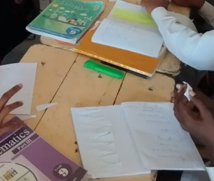

Area of a circle
A paper circle cut into 16 sectors gives students a way to see where πr² comes from.
Learning goal
Explain why half the circumference and the radius appear in the formula for the area of a circle.
What we did
I arranged alternating paper sectors on the board and wrote the calculation beside them. Students worked with cut paper in their exercise books. Moving the pieces keeps the area the same.
Why I chose this sample
I chose the board model and the desk photograph because they show two parts of the lesson. The blue sectors show the arrangement I demonstrated. The notebook shows the material students worked with. Neither photograph records an individual explanation.
How I read the work
With 16 sectors, the top and bottom edges are scalloped. As the sectors get narrower, the shape approaches a rectangle with base πr (half of 2πr) and height r. A complete explanation connects those lengths to the original circle and accounts for its area, πr × r = πr².
What I would change
The outline I drew makes the formula easy to see, but it also makes the edges look straight too soon. Next time I would put an eight-sector model beside the 16-sector model and ask each learner to explain what changes and what stays the same.
Classroom evidence

